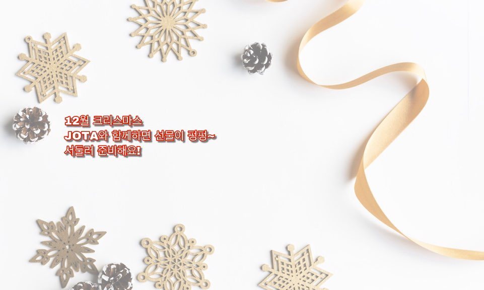
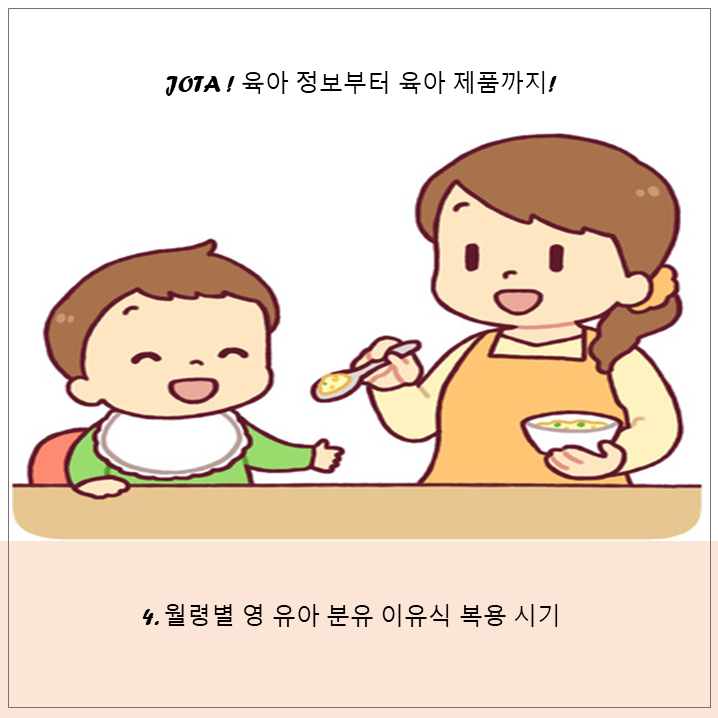
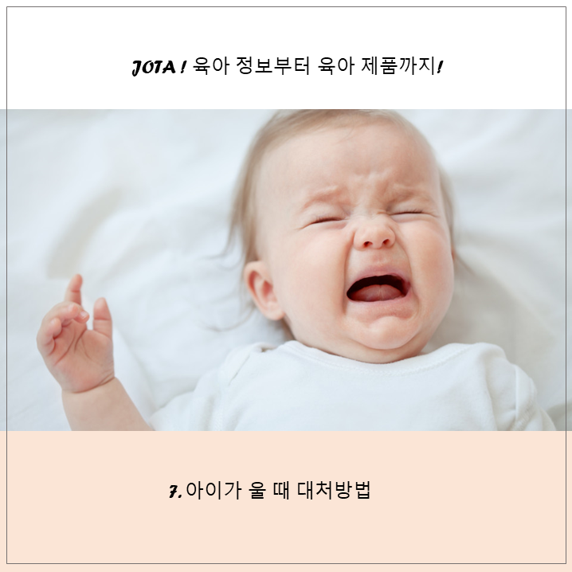
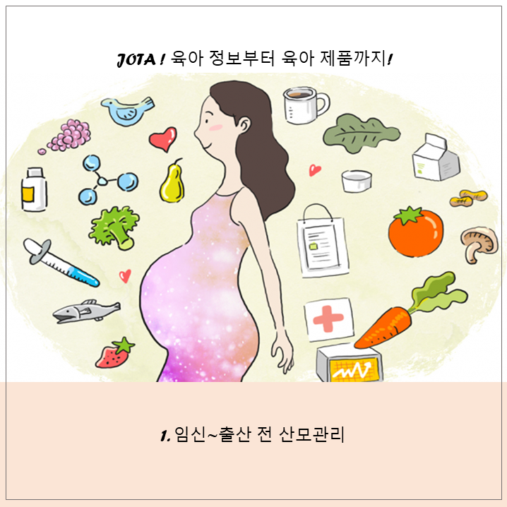
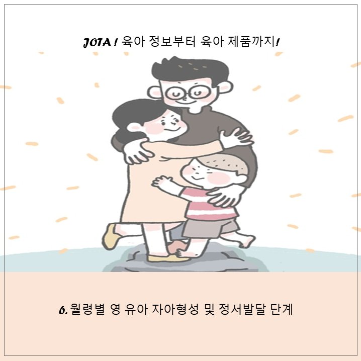
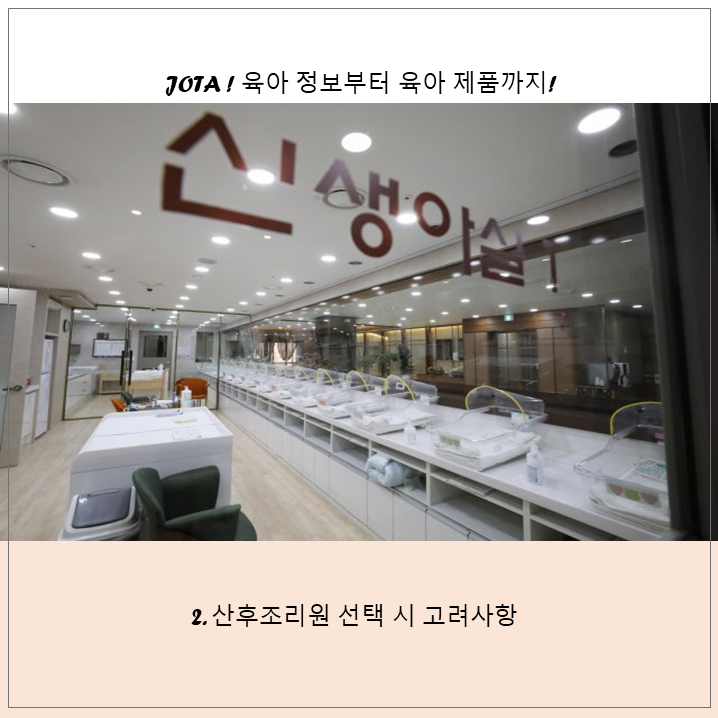

JOTA
커뮤니티
육아정보
모임
멘토링
질문과 답변
스토어
스토어홈
카테고리
Log in
Sign Up
JOTA
커뮤니티
육아정보
모임
멘토링
질문과 답변
스토어
스토어홈
카테고리
Login
Signup
JOTA
커뮤니티
육아정보
모임
멘토링
질문과 답변
스토어
스토어홈
카테고리
Log in
Sign Up

이벤트 바로가기
BEST 육아TIP

4. 월령별 영유아 분유 이유식 복용 시기
아이 개월수에 따른 분유 선택과 이유식 선택을 자세하게 알아보자.
2019.12.21
3721 view

7. 아이가 울 때 대처방법
아이의 울음소리에 따른 이유와 대처법.
2019.12.24
669 view

1. 임신-출산 전 산모관리
임신시기와 출산 이후 산모는 어떻게 관리해야 할까?.
2019.12.18
593 view

6. 월령별 영유아 자아형성 및 정서발달 단계
이 시기의 자아형성이 여든까지 간다.
2019.12.23
281 view

2. 산후조리원 선택시 고려사항
산후조리원을 선택할 때 가장 고려해야 하는 조건은?
2019.12.19
233 view
더보기